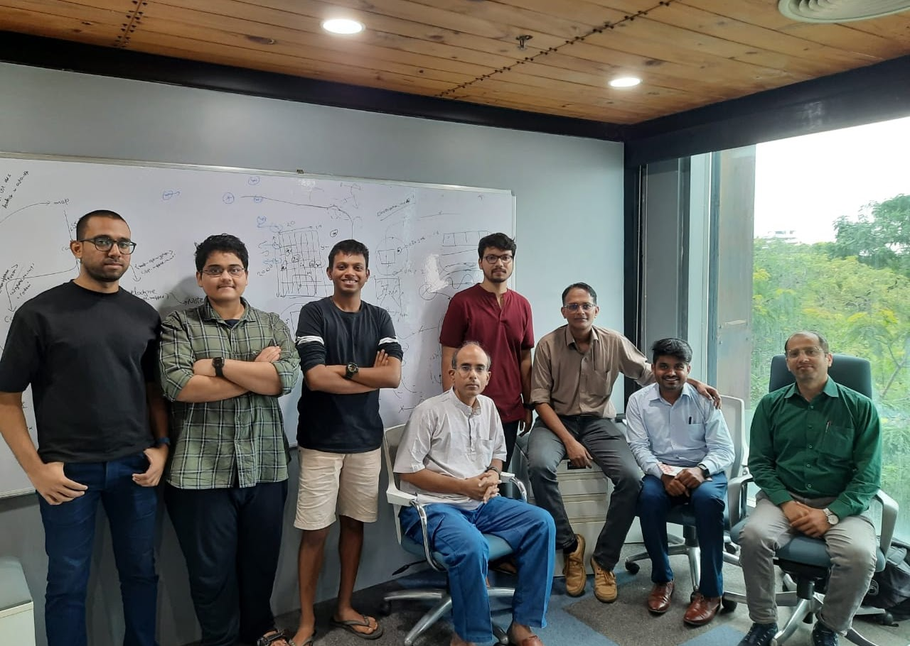

Project with CAIR
CAIR team visits IIITH for the final project demonstration 28/07/2023
As part of my research at the Robotics Research Centre, I delved into the field of autonomous navigation systems. This involved exploring cutting-edge techniques in areas such as sensor fusion, localization, and motion planning. To further enhance my skills and gain real-world experience, I had the opportunity to collaborate with the prestigious Centre for Artificial Intelligence & Robotics (CAIR) under the Defence Research and Development Organisation.
This collaborative project demanded daily interaction and coordination with a diverse team comprising my lab-mates, experienced CAIR researchers, and my knowledgeable professor. This dynamic environment fostered strong teamwork and communication skills as we worked together to address complex technical challenges. Moreover, it exposed me to the intricacies of working within a larger organization, teaching me the importance of adaptability and effective collaboration.